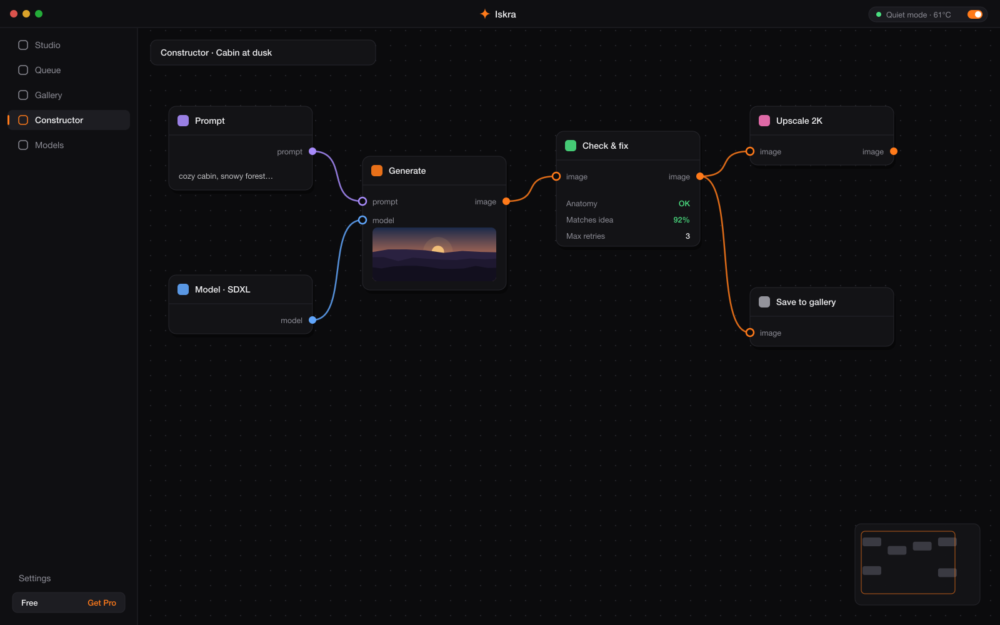
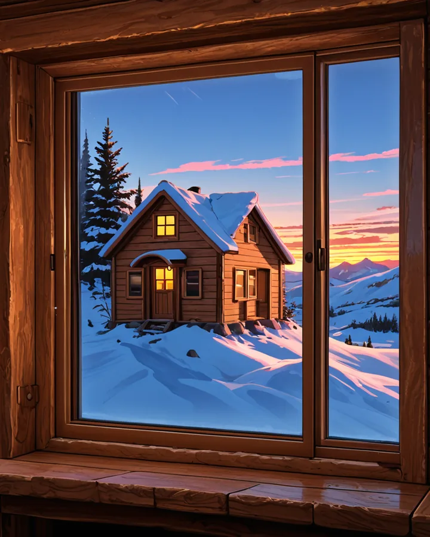
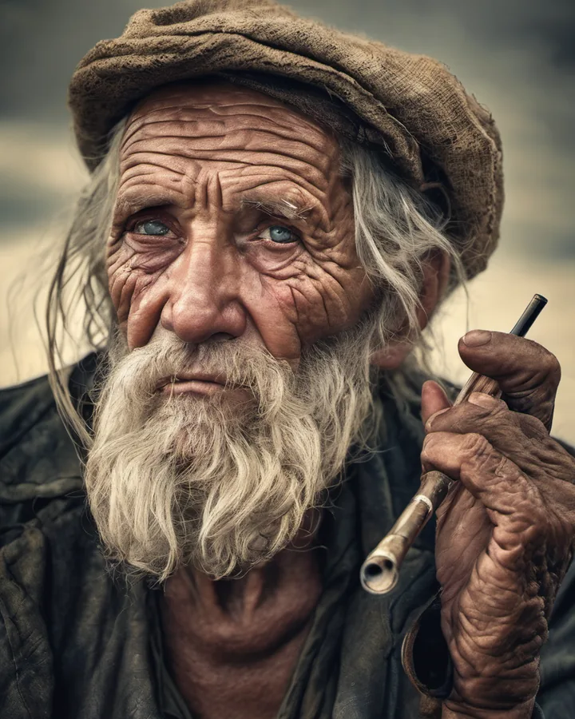

Studio Free
Write what you want in plain words, in any language. Iskra turns it into a proper prompt, picks sensible settings and shows results as they finish. No wires, no jargon.
For Mac with Apple Silicon and Windows with NVIDIA
On your computer. No subscriptions. Iskra checks its own results and redoes the flawed ones.
Images are free forever. Pro is a one-time payment — no subscription.

Everything a local image studio needs — plus the parts that save you hours.
Write what you want in plain words, in any language. Iskra turns it into a proper prompt, picks sensible settings and shows results as they finish. No wires, no jargon.

Iskra inspects every result for broken anatomy and for whether it actually matches your idea — and redoes the ones that fail. Fewer rejects to sort through.

Line up a list of ideas before bed. In the morning, a folder of finished, already-checked results is waiting.

Caps temperature and load so your laptop stays cool and quiet. A bit slower — but you can keep working right next to it.

Character → animation → sprite sheet with a transparent background and a JSON atlas, ready to drop into your engine.

Keep one character’s look and put them anywhere — new places, poses and moods — without them turning into someone else.
Bring a still to life as a short clip, powered by the open Wan 2.2 model running on your own machine.

Every Studio recipe is a pipeline you can open. Tweak any step, or build your own from scratch with clearly labelled nodes.
Unedited outputs from Iskra’s engine, made on a MacBook with open SDXL-based models.


Open Iskra and a three-step wizard checks your hardware, installs the engine and downloads a starter model. No terminal, no Python.
In your own words, in any language. Pick a preset — Anime, Photo, Art, Game character or Video — and a format.
Results land in your feed as they finish. With Check & fix on, Iskra reviews each one and redoes the flawed ones first.
Each is good at something. Here’s an honest look at where Iskra fits.
| Aspect | Iskra | ComfyUI | Cloud generators |
|---|---|---|---|
| Getting started | Installer plus a 3-step wizard that sets up the engine and a starter model for you. | Desktop installer or portable build; you find models, workflows and custom nodes yourself. | Nothing to install — open a browser. |
| Privacy | Everything stays on your computer. | Everything stays on your computer. | Prompts and results are processed on the provider’s servers. |
| Cost | Free for images. Pro is a one-time $12 at launch ($19 later). | Free and open source. | Usually a monthly subscription or paid credits. |
| Self-check | Built in (Pro): checks anatomy and match to your idea, redoes failures. | Possible if you build or install the right workflow. | Usually you re-roll by hand. |
| Language | Describe in any language — a local language model writes the prompt. Interface in English, Ukrainian and Russian. | Interface in several languages; prompts work best in English. | Depends on the service; many understand several languages. |
| Flexibility | Studio for everyday work, Constructor for custom pipelines. | The most flexible — a huge ecosystem of custom nodes. | Limited to what the service offers. |
| Hardware | Apple Silicon Mac or a PC with an NVIDIA GPU. | A capable GPU; supports more hardware than Iskra today. | Any device with a browser. |
| Source code | Closed source. | Open source (GPL-3.0). | Closed source. |
Love tinkering with nodes and custom extensions? ComfyUI is excellent. Iskra is for when you just want the picture.
Images are free, for good. Pro unlocks video and the features that save you time.
Everything you need to make images.
No account, no time limit.
For video, games and getting more done.
Lifetime license for Iskra 1.x.
One-time payment, not a subscription. All 1.x updates are free. Not happy? Full refund within 14 days.

An internet connection is needed for the first setup, to download the engine and models. Video is much heavier than images: more memory means shorter waits.
Yes. Images and videos are generated entirely on your computer — your descriptions and results are never uploaded anywhere.
Iskra goes online only to download the engine and the models you choose and, with Pro, to re-check your license key about once a week. Pro keeps working offline for up to 30 days between checks.
Iskra doesn’t bundle models: during setup it downloads a starter model from Hugging Face, and you can add more in the Models window. Every model there shows its license and whether you may use results commercially.
The default starter model is SDXL, under the CreativeML Open RAIL++-M license, which allows commercial use within its use restrictions. Video uses Wan 2.2 (Apache 2.0). Some popular models, such as FLUX.1 [dev], are non-commercial — Iskra marks them clearly. When in doubt, read the license of the model you use.
Iskra isn’t signed with a paid Apple Developer certificate yet, so macOS shows a warning the first time. You only need to allow it once:
If macOS says the app is “damaged”, run this in Terminal and open it again: xattr -dr com.apple.quarantine /Applications/Iskra.app
That’s Microsoft SmartScreen: the installer isn’t code-signed yet. Click More info, then Run anyway. You’ll only see it once per installer.
Free gives you Studio and Constructor for images, all image models, Quiet mode, the gallery and image compression — with no time limit.
Pro adds video from image, Check & fix defects, the Night queue and batches, game assets (sprite sheets), the same character in new scenes, and upscaling to 2K/4K with a detailer. It’s a one-time payment: $12 at launch, $19 later. Free features are never locked.
Yes. If Pro isn’t right for you, reply to your Gumroad receipt within 14 days of purchase and you’ll get a full refund.
Not yet, honestly. Today Iskra supports Macs with Apple Silicon (M1 or newer) and Windows PCs with NVIDIA graphics. Intel Macs, AMD and Intel GPUs, and Linux aren’t supported. Please try the free version on your hardware before buying Pro.
Download Iskra for free. Upgrade to Pro only if you want video and the time-savers.
macOS (Apple Silicon) · Windows 10/11 (NVIDIA)